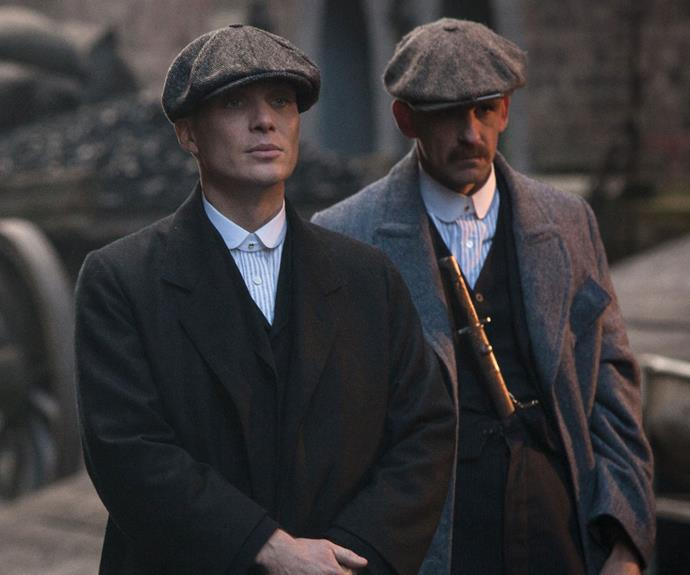
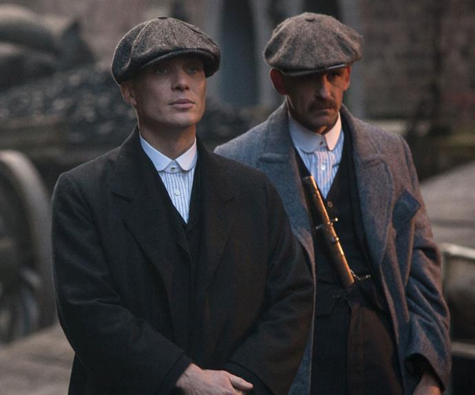

EPISODE-1
Business is booming for the Peaky Blinders, as Shelby starts expanding both his legal and illegal operations. He plans for the future, looking at managing a race track in the South. He soon comes across some new adversaries, testing him in very different ways. Back in Birmingham, Shelby's home town is challenged by members of his family reacting to the upturn in their fortunes. A enemy from his past also returns hoping to exact their plan of revenge of biblical proportions
EPISODE-2
Tommy offers to help Polly by searching for her children, who long ago were taken from her. In London, Tommy risks his life by meeting enigmatic leader Alfie Solomons. Meanwhile Arthur continues to feel the devastating effects of the Great War....
EPISODE-3
Tommy hatches a plan to take control of the southern racecourses. He also meets the aristocratic May Carleton, and sees an opportunity to move up in the world. Meanwhile both Major Campbell and London gangster Darby Sabini plan Tommy's downfall....
EPISODE-4
Arthur leads the Peaky Blinders takeover of London's Eden Club. Sabini decides to put old feuds to one side, convincing Alfie to one side to get rid of the Peaky Blinders. Tommy hires May Carleton to train his race horse, and the pair become fast friends. In Birmingham, Michael joins the family firm, hoping to help Tommy's businesses become more legitimate. Whilst Tommy's insecurities are intensified as he discovers what Major Campbell wants him to do....
EPISODE-5
Arthur and Michael both end up arrested and imprisoned. As Tommy's base in London is obliterated. Major Campbell has Tommy and his family under his thumb. Polly compromises herself hoping to secure Michael's freedom, but their relationship may be beyond repair at this point. Someone from Tommy's past pays him a visit, opening old wounds and leaving him to make a impossible decision....
EPISODE-6
As derby day arrives, Tommy is faced with impossible decisions as he plans to strike back at his enemies and take the family business to another level. Meanwhile, Major Campbell has one final card to play - one that he is certain will bring about Tommy's demise....
 
